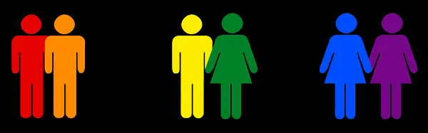
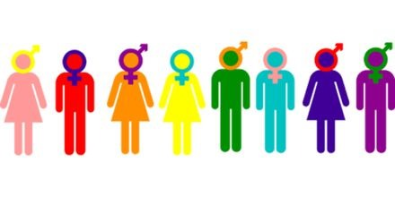
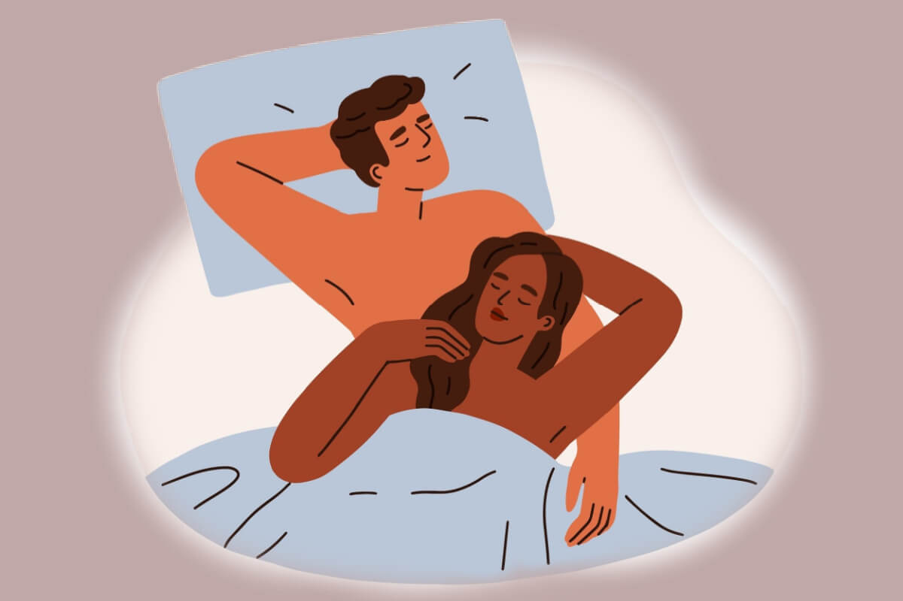

Masturbação
Masturbação é o ato da estimulação dos próprios órgãos genitais, manualmente ou por meio de objetos, com o objetivo de obter prazer sexual, seguido ou não de orgasmo.
#1 “A MASTURBAÇÃO NA ADOLESCÊNCIA CAUSA ESPINHAS”
MITO. Por se tratar de eventos habituais do mesmo estágio da vida, é comum que as duas situações sejam associadas. Contudo, não há evidências genéticas ou hormonais de que a masturbação facilite o surgimento de espinhas.
#2 “É POSSÍVEL ROMPER O HÍMEN DURANTE A MASTURBAÇÃO”
FATO. O hímen é uma membrana fina que recobre a entrada da vagina. O seu rompimento é frequentemente associado à perda da virgindade. Entretanto, há diversos fatores que podem contrariar esse sentido, como as práticas que não envolvem penetração serem consideradas sexo, além da fragilidade da membrana permitir que, em alguns casos, também seja rompida por meio acidentes, atividades esportivas, uso de absorventes íntimos e a masturbação penetrativa.
#3 “MASTURBAÇÃO AJUDA A ALIVIAR DORES MENSTRUAIS E INSÔNIA”
FATO. Para ambos os sexos, a masturbação funciona como um ótimo relaxante, pois gera um gasto energético, eleva os níveis de endorfina e libera hormônios como a dopamina e a oxitocina. No caso das dores menstruais, esses hormônios diminuem a percepção de dor.

Orientação Sexual
Orientação sexual refere-se à atração (ou a falta dela) emocional, romântica ou sexual que uma pessoa sente em relação a outros indivíduos. Essas atrações são geralmente agrupadas em heterossexualidade, homossexualidade, bissexualidade, pansexualidade e assexualidade.
#1 “ORIENTAÇÃO SEXUAL É BASEADA SOMENTE EM SEXO BIOLÓGICO”
MITO. Essa é uma questão que pode confundir bastante quem está em processo de descobrimento. A abordagem da orientação sexual é subjetiva para cada indivíduo, pois também engloba questões de identidade gênero e não se limita apenas ao sexo biológico.
#2 “A ORIENTAÇÃO SEXUAL É UMA ESCOLHA”
MITO. A orientação sexual é um aspecto complexo da identidade pessoal e não é uma escolha. As hipóteses mais aceitas pela ciência hoje, afirmam que é uma questão influenciada por uma combinação de fatores biológicos, genéticos, psicológicos e sociais. É uma parte intrínseca ao indivíduo e não é possível ser “corrigida”.
#3 “A ORIENTAÇÃO SEXUAL É UMA FASE PASSAGEIRA DA ADOLESCÊNCIA”
MITO. Embora a orientação sexual possa ser mais fluida e evolutiva ao longo da vida, muitos adolescentes já têm uma compreensão clara da sua orientação sexual durante a adolescência. Para alguns, inclusive, a orientação se solidifica mais tarde na vida, ou até mesmo mais cedo.

Identidade de gênero
Identidade de gênero é a percepção interna que uma pessoa tem sobre seu próprio gênero, que pode ou não coincidir com o sexo atribuído ao nascimento. É uma parte central da identidade pessoal e pode influenciar como a pessoa se expressa e se relaciona com o mundo.
#1 “IDENTIDADE DE GÊNERO É A MESMA COISA QUE ORIENTAÇÃO SEXUAL”
MITO. Identidade de gênero e orientação sexual são conceitos diferentes. Identidade de gênero refere-se à percepção individual de si mesmo como homem, mulher, ambos ou nenhum, enquanto orientação sexual diz respeito à atração emocional, romântica ou sexual por outras pessoas.
#2 “DISFORIA DE GÊNERO NÃO É O MESMO PARA TODOS”
FATO. A experiência de disforia de gênero, que envolve desconforto com o próprio corpo e expressão de gênero, varia amplamente entre as pessoas. Alguns podem sentir desconforto intenso com características físicas específicas, enquanto outros podem focar mais na identidade social e no reconhecimento pessoal.
#3 “A PESSOA SÓ É TRANS SE FAZ CIRURGIA”
MITO. É comum a ideia equivocada de que uma pessoa trans só é considerada verdadeiramente trans após uma intervenção cirúrgica. No entanto, a verdadeira base é como a pessoa se sente psicologicamente. A cirurgia pode ser uma opção para melhorar o bem-estar, mas não é necessária em todos os casos. Tratamentos hormonais, por exemplo, podem proporcionar conforto significativo sem necessariamente envolver cirurgia.
Consentimento
O consentimento sexual é a autorização ou concordância clara e voluntária de uma pessoa para participar de uma atividade sexual.
#1 “O CONSENTIMENTO PODE SER RETIRADO A QUALQUER MOMENTO”
FATO. Mesmo se uma pessoa consentiu anteriormente, ela tem o direito de retirar seu consentimento a qualquer momento durante o ato sexual. É fundamental respeitar esse direito e parar imediatamente se o consentimento for retirado.
#2 “SE UM CASAL ESTÁ EM UM RELACIONAMENTO, O CONSENTIMENTO É AUTOMÁTICO”
MITO. Estar em um relacionamento não significa que o consentimento está sempre presente. Cada ato sexual deve ser consensual e discutido claramente, independentemente do status do relacionamento
#3 “CONSENTIMENTO NÃO PODE SER OBTIDO SOB COERÇÃO”
FATO. O consentimento deve ser dado livremente, sem pressão, manipulação ou coerção. Pressionar alguém ou fazer com que se sinta culpado para obter um consentimento não é aceitável.

Práticas sexuais
As práticas sexuais abrangem uma ampla gama de comportamentos e atividades realizadas por indivíduos ou casais para obter prazer sexual ou intimidade. Estas práticas variam culturalmente e individualmente e podem incluir, mas não se limitam a, relações sexuais penetrativas, estimulação manual ou oral, e uso de brinquedos sexuais.
#1 “SEXO SEGURO É NECESSÁRIO APENAS PARA PREVENIR A GRAVIDEZ”
MITO. O sexo seguro é fundamental para prevenir infecções sexualmente transmissíveis (ISTs) e gravidez não planejada. O uso de preservativos e outros métodos contraceptivos é essencial, principalmente considerando a prevalência relativamente alta de gravidez precoce e ISTs entre adolescentes
#2 “SÓ SE PERDE A VIRGINDADE QUANDO ROLA PENETRAÇÃO”
MITO. A verdade é que não existe uma definição universalmente aceita do que é sexo. Apenas masturbar o parceiro, fazer/receber sexo oral ou outras práticas que não incluem penetração, por exemplo, podem sim ser consideradas sexo. Basta que os envolvidos assim as vejam
#3 “A EDUCAÇÃO SEXUAL INCENTIVA A HIPERSEXUALIZAÇÃO DE ADOLESCENTES”
MITO. A educação sexual desde a infância e adolescência fornece informações precisas sobre saúde sexual e autoconhecimento. Além disso, enfatiza o respeito e o consentimento. É essencial para reduzir o estigma e a desinformação, levando a comportamentos mais saudáveis e responsáveis
Componentes
Biologia I - Infoweb 3M
- Douglas Santos
- Maria Clara
- Mateus Cosme
- Sara Monalisa
- Stephanny Nayane